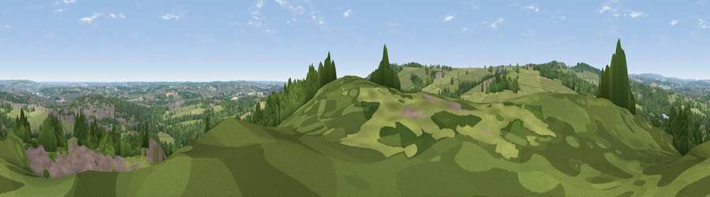

Viewpoint near Press
#28303 in England · top 45% of its area beats it · near Press · path 196 mWhere it is
The exact computed spot (SK 36675 66025). Click the marker for map links.
Public access: the nearest public right of way is about 196 m away — the final stretch may cross private land. Computed from Natural England's CRoW access layer and OpenStreetMap rights of way — not the legal definitive map. Always verify locally.
The view, rendered

A 360° render of this exact spot computed from the terrain model, tree cover and land cover — summer colours, afternoon light, calibrated against photographs of famous viewpoints. Real trees, hedges and buildings will differ in detail.
The panorama
Grey silhouette: terrain skyline in each direction (720 bearings, Earth curvature and refraction included). Dashed green: skyline with trees (+15 m) and buildings (+8 m) as obstacles. Blue strip: how far the ground is visible on each bearing.
Where the view opens
Wedge length = distance to the farthest visible ground on that bearing (vegetation-aware). Rings at 10, 25 and 50 km.
What fills the view
48% grassland · 33% woodland · 13% built-up · 5% cropland
Angular shares of the visible panorama (visual magnitude), not map area. Landscape diversity 0.50 (0–1 Shannon).
Key numbers
More beautiful places nearby
The staircase of upgrades: each row has a higher view potential than everything closer. Driving times are estimates from straight-line distance, calibrated against real road routing — check an actual route before setting out.
| Place | Direction | Drive | Score |
|---|---|---|---|
| Viewpoint near Wingerworth | NNW · 2 km | ~5 min | 42.8 |
| Viewpoint near Holymoorside | NW · 2 km | ~6 min | 54.5 |
| Viewpoint near Alton | SSW · 2 km | ~6 min | 67.0 |
| Viewpoint near Alton | SSW · 3 km | ~6 min | 67.7 |
| Viewpoint near Brackenfield | S · 7 km | ~14 min | 68.3 |
| Crich Stand | SSW · 11 km | ~21 min | 73.0 |
| Alport Height | SSW · 16 km | ~28 min | 73.9 |
| Tissington Hill | WSW · 25 km | ~41 min | 75.5 |
53.19006, -1.45257 · source: screening · position refined by local search. Computed location — check access rights before visiting.